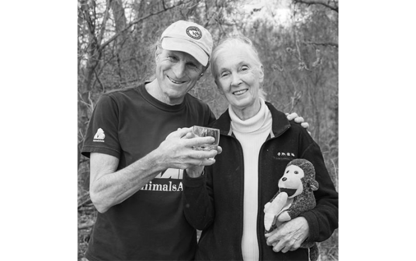
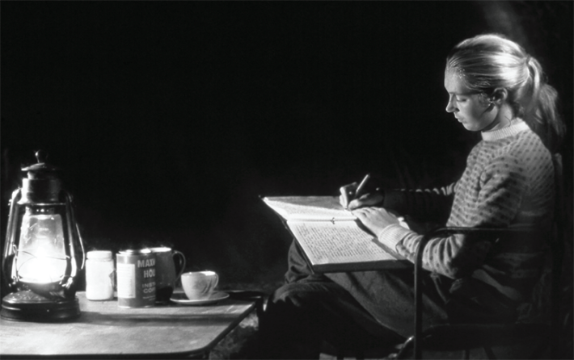
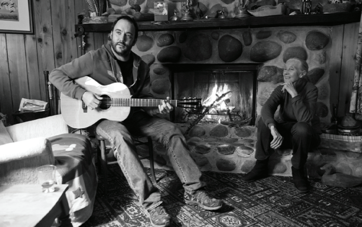
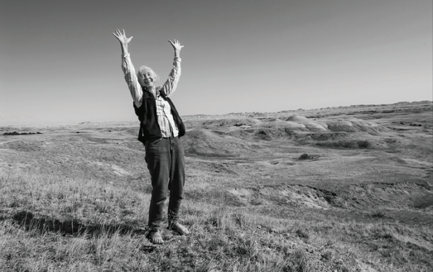

The following reflections and stories are from the bookJane Goodall at 90: Celebrating an Astonishing Lifetime of Science, Advocacy, Humanitarianism, Hope, and Peace, edited by Marc Bekoff and Koen Margodt, published in 2024 in celebration of Goodall's birthday. Nautilus is reprinting excerpts, with the permission of Bekoff, in honor of Goodall, who died on Oct. 1, 2025.
Over the many years we knew Jane Goodall, we worked closely with her on a number of projects during which we had serious discussions, fun, laughter, and ample amounts of peaty scotch. We also have co-chaired the Jane Goodall Institute's Global Ethics Committee for several years and have benefitted from Jane’s countless words of wisdom.
Our original idea was to have people write about “Dr. Jane,” as she was often called, as an advocate, globetrotting voice for animals, humans, and their homes, a pillar of hope, and scientist. However, we realized that it was nearly impossible to pigeon-hole Jane into this or that category. It’s immediately clear that she can easily be called a “Jane-of-all trades”—a globe-trotting, eclectic English woman—that is how diverse she truly is. She was a magnet who easily attracted diverse people of all ages and cultures into her global umbrella of caring, compassion, empathy, dignity, wisdom, and hope.
Marc Bekoff, professor emeritus of ecology and evolutionary biology at the University of Colorado, Boulder; Fellow of the Animal Behavior Society:
Jane’s methods and approaches to animal behavior were what I really found so astonishing—starting with her habit of naming the awesome chimpanzees she studied and stressing their individual personalities. She always felt that every individual counts, not only among the animals she was studying but also when working with people who were concerned about saving other species and their homes.
At the time, naming and recognizing individuality were not standard operating procedure in studies of animal behavior, most of which were conducted in artificial situations in various sorts of captive settings. How unscientific it was, they said: Animals should be numbered and only humans had personalities.
The most important thing that Jane did was to narrow the gulf between us and animals.
I was vulnerable, of course, as a mere graduate student, but I had Jane’s example to support me. I knew that Jane had refused to change the ways in which she referred to the chimpanzees, and I too refused to change. In the end, it worked. And, over the past 40-odd years, Jane has been proven to be right on the mark. Science has changed, and we are now allowed to consider animals as subjects, not objects, and to recognize that their individual personalities are extremely important to study.
Suffice it to say, Dr. Jane has influenced my life in many, many ways, and I am thrilled to count her as a close friend. Thank you, Jane, for what you have done for all animals, nonhuman and human, and for their homes. I carry you and your messages in my heart and will continue to do so forever.

TO THE CRANES!: Jane and Marc Bekoff toasting at Tom Mangelsen’s cabin in Nebraska during the crane migration, March 2012. Image Source: Thomas D. Mangelsen
Anne Pusey, James B. Duke Distinguished Professor Emerita of evolutionary anthropology, Duke University. Former director of the Jane Goodall Institute Research Center, Duke University:
A joy of my unforgettable years at Gombe was sitting with Jane on the beach of Lake Tanganyika after a day of following the chimpanzees, recounting to her what I had seen. I was studying youngsters and had stories of Atlas nesting away from his mother for the first time; Goblin throwing a tantrum when his mother wouldn’t come with him as he followed his idol, Figan; and Little Bee checking out the males next door then returning to visit her mother and sister. Jane was eager to hear about the doings of the chimps she knew so well and unfailingly brought up similar examples from other families that she had observed. Thus, we pieced together a picture of the different pathways to independence.
Fast forward 10 years and I had begun studying the lions of the Serengeti. Jane was steeped in the daily lives of the chimps. She caught me up with news of my young subjects, now adults, when she visited the Serengeti and I visited her in Dar es Salaam. In 1986, her magnum opus, The Chimpanzees of Gombe was published. This wonderful book brilliantly combines stories—word pictures—of specific episodes that vividly portray the individuals and their behavior with numerical analysis of general trends. Although she was planning to continue her research, her life was forever changed when she attended a conference to celebrate her book’s publication and she heard about the plight of chimps in the rest of the world. As she put it, she went in a scientist and came out an activist.
Ingrid Newkirk, founder of PETA:
In 1986, while Jane was staying with longtime PETA member and author Ann Cottrell Free, “the case that broke the species barrier” erupted.
A group called True Friends had somehow surreptitiously entered SEMA, a National Institutes of Health–funded laboratory in Rockville, Maryland, not far from where Jane was staying. Once inside, they made off with four baby chimpanzees slated to be used in hepatitis B and AIDS experiments.
Group members filmed conditions inside the laboratory, where adult chimpanzees were locked in solid-walled steel chambers barely larger than their own bodies. They rocked back and forth, banging their heads against the cage walls, with nothing to see but a few feet of the room and nothing to hear but the constant hum of the mechanism pumping air in and out of their chambers. The infants had yet to be infected when they were spirited away into the night, never to be found. PETA showed the video taken inside SEMA to Jane, who watched it with “shock, anger, and anguish” and decided she must go to the laboratory to see inside it for herself.

FIELD NOTES: Each evening in her tent at Gombe, Jane would enter data from her field notebooks into a journal. Image Source: Hugo van Lawick
Government inspectors had been turned away, but how could they turn away the world’s foremost chimpanzee researcher? They refused Jane at first, then realized they had to allow her, accompanied by Sen. John Melcher of Montana, to enter. Both of them emerged shaken.
Jane wrote, “I shall be haunted forever by … the eyes of the infant chimpanzees I saw that day,” and went on to describe the cages as “bleak and sterile, with bars above, bars below, bars on every side.” She made a pledge: “The least I can do is to speak out for the hundreds of chimpanzees who, right now, sit hunched, miserable and without hope, staring out with dead eyes from their metal prisons.” And she did just that.
SEMA changed its now publicly tainted name to Bioqual, but more than that changed as a result of Jane’s involvement. Chimpanzee babies held in the facility started to be housed together and be given toys to tear apart, some tiny compensation for being deprived of a real life and eventually infected with diseases. But eventually, this case became a catalyst for the biggest change of all: the end of the use of chimpanzees in experiments in the U.S.
Peter Singer, philosopher, author of Animal Liberation, first published in 1975, which had a big influence on Jane. In 2023, Singer published a fully updated version, Animal Liberation Now.
If you search the internet for “What did Jane Goodall discover?” you are likely to be taken to a page on the website of the National Geographic Society where you will read: “Jane Goodall was the first person to observe chimpanzees creating and using tools—a trait that, at that time, was thought to be distinctly human.”
But for me, the most important thing that Jane did was to narrow the gulf that philosophers, theologians, and others have dug between us and animals. For centuries, especially in Western thought, we have categorized all non-humans, whether chimpanzees or snails, as “animals” and thought of ourselves as something quite distinct from animals.
Some thinkers told us that we are a special divine creation, made in the image of God, and with an immortal soul. Descartes went so far as to say that all animals are automata, not even conscious. Jane broke scientific conventions by giving names to the chimpanzees she was observing, and showing us that they are involved in complex social relationships and have individual personalities.
As Jane put it, she went in a scientist and came out an activist.
In reading Jane’s work, we recognize that chimpanzees, like us, express positive feelings with a hug or a pat, and when angry, can be aggressive and violent. It is of course true that Jane also discovered that chimpanzees shape twigs to use as tools in catching termites, but the importance of this discovery lies in what it tells us about the ability of nonhuman animals to plan ahead. To select a straight twig and strip off its leaves does not count as making a tool unless you are planning to use it as one. The statement you find on the internet gets it wrong.
To claim that Jane was “the first person to observe chimpanzees creating and using tools” is to deny the chimpanzee personhood that Jane has so painstakingly observed and persuasively described. The first person to observe chimpanzees creating and using tools was another chimpanzee. Jane was merely the first human to observe it.
By narrowing the gulf that we had conjured up between humans and animals, Jane has provided a strong scientific basis for those who advocate for respecting the interests of nonhuman animals. She has, of course, used that basis superbly herself, but it is even more important that she has changed forever the way we think about ourselves and other animals.
Dave Matthews, singer and songwriter:
I first met Jane on July 7, 2007, at Giant Stadium. We were both scheduled to appear at the Live Earth concert which was to be broadcast from cities around the globe. Moments before Jane was due to go on stage, I introduced myself. As a boy I’d followed her through the pages of National Geographic and on television as she braved the jungles of Tanzania pursuing a greater understanding of wild chimpanzees. Here I was meeting her in person. I was awestruck but she greeted my fawning with quiet grace and her familiar smile.

DAVE AND JANE: Dave Matthews playing the guitar for Jane and others gathered in Tom Mingelsen’s cabin in Nebraska, 2011. Image source: Thomas D. Mangelsen
Jane walked on stage to little fanfare. I watched from the wings as she stepped up to the mic alone and confessed to the audience of nearly 100,000 that she wasn’t accustomed to addressing so many. So, she said she would begin with the call a chimpanzee would make to greet their fellow chimps across the jungle. She followed with her now famously convincing impersonation of a chimpanzee greeting. The crowd was at first silent but soon Jane’s strange, haunting call seemed to elicit some primal response that rose to a deafening, joyful roar. This slight but mighty woman from Bournemouth in England blew the roof off a stadium with nothing but her voice.
Our species’ endless hunger for more power and more money has only one outcome. The planet is so abundant, but it is finite, and we are quickly reaching its end. Our oceans and forests cannot sustain us at this rate. It seems we haven’t yet learned, despite Jane’s efforts, that we rely on a healthy Earth for our survival.
Jane remains hopeful. Her hope does not deny the direness of our situation. But hope is her response.
Shweta Naik, executive director, Jane Goodall Institute India:
One nondescript morning, I happened to venture into a shop in Dar es Salaam, Tanzania, with Jane. The incumbent shopkeeper’s anger and irritation at an employee hung heavy in the air. Then, Jane walked in. The shopkeeper’s demeanor transformed drastically. Her greeting changed the entire atmosphere, as if a serene breeze had swept through the room. The shopkeeper, once agitated, suddenly became the embodiment of calmness and gentleness. He greeted Jane with deference and humility, captivated by her presence. A brief exchange sufficed to dissolve the tension that had pervaded the environment. Jane’s presence alone managed what seemed impossible—to infuse tranquility in the room.
Jason Schoch, Jane Goodall's Roots & Shoots Native Americas Project, South Dakota:
In 2017, whilst visiting with Jane, in her small forest home, hidden away in the forest of Gombe National Park, discussing my day’s adventure to observe and photograph the chimps high up in the mountains, I watched as a tiny tree frog leaped from between the bars of the window down onto Jane’s shoulder. She didn’t startle, as most people would have. She just greeted it with a simple, “Hello” and kept on talking with Anthony Collins and I, sipping scotch. After some time, she asked me to help her move the frog back out into the forest. We stepped out into the cool darkness of the forest night, alive with the sounds of all the biodiversity protected by Jane’s efforts and I helped her gently place the tiny tree frog on a branch of a nearby tree. Returning home to the States, I knew we had to expand our efforts beyond helping just people, to start protecting the land, plants, and animals around them.

YIPPEE: Jane pretending to be a prairie dog doing a jumping-yipping display in South Dakota. Image source: Thomas D. Mangelsen
Azzedine Downes, president and CEO of the International Fund for Animal Welfare. Member of the Jane Goodall Legacy Foundation Council for Hope:
There are few absolutes in our lives. Still, many people want simple answers to complex questions. Jane and I talk about these questions frequently and I rely on her wisdom to help formulate answers that are always truthful if sometimes challenging to deliver.
Why challenging? People who love animals sometimes romanticize life in the wild. Life in the wild can be brutal. The alphas may have a wonderful life but if you are at the bottom of the social structure, life can be stressful or violent. I once shared that observation and was challenged. “That’s not true, animals live in harmony” was the response. I told the person that I would have to decide, trust Jane Goodall or rely on your observation; I went with Jane Goodall.
Not every conversation with Jane is about work. Our conversations sometimes begin on a surprising launch pad. We were both in Hawaii for the International Union for Conservation of Nature Congress and planned to get together after one of Jane’s presentations. From the lobby of the hotel, I phoned up to say I was here. Jane said to come up. When I got to her room, Susana Name told me that Jane had just gone down to look for me. She also pointed to a note on the table next to the open French doors leading to a small faux balcony. I was confused and said that I had just spoken to Jane but would read the note to see what was going on. I stood next to the open window reading the note. Jane suddenly jumped in through the open window and scared the daylights out of me and I almost pushed her off the balcony! This didn’t happen in our younger days; she pulled the prank in 2016!
Peter Biro, founder of Section 1, a senior fellow of Massey College, and chair emeritus and past chair of the Jane Goodall Institute, Global:
Jane is possessed of—indeed, defined by—what Hannah Arendt called “amor mundi”—love of the world. That turns out to be a rather demanding, full-time commitment!
Recently, when she paid a visit to my cottage for the express purpose of taking refuge in the forest on the lake and finding respite from the furious pace of her permanent world tour, she could not resist the urge to instead write letters to supporters, conduct video conferences, and record video messages to various stakeholders, donors, and policymakers. She even recorded one especially moving video message for a total stranger who, Jane had come to learn, was living out the final days of her life. Jane concluded that message with the following words: “I look forward to my own similar journey and I can’t wait to meet you on the other side." I am told by the husband, now widower, of that woman—who died one week later by MAID (medical assistance in dying)—that Jane’s message to his wife made all the difference in the world.
That is what Jane does. She makes all the difference in the world. 
Lead photo: vitrolphoto / Shutterstock
Källförteckning
- Originalartikel: https://nautil.us/the-indomitable-jane-goodall-1240427/